Panduan
Website EzFiFoMedan ini bertujuan untuk mencari tempat makan yang ada didaerah Medan.
Pertama kita bisa mensearch pada tempat yang telah disediakan.
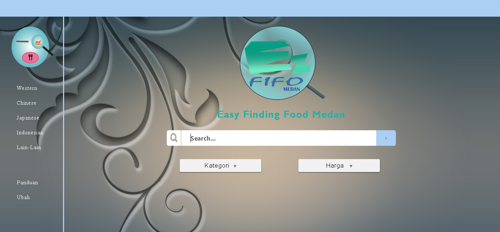Kita juga bisa memilih kategori dan harga yang telah disediakan.
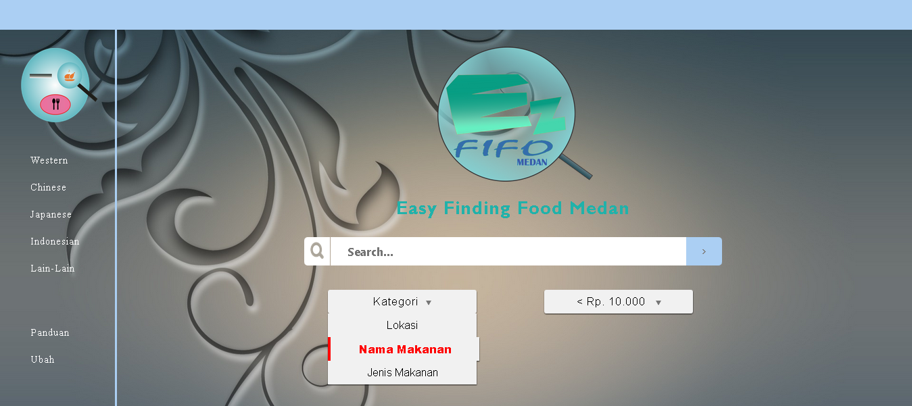 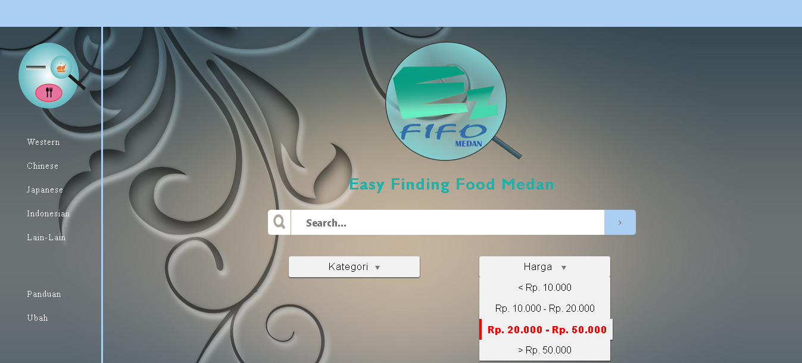Kita bisa langsung pada kolom tersebut. Misalnya : "Thamrin"
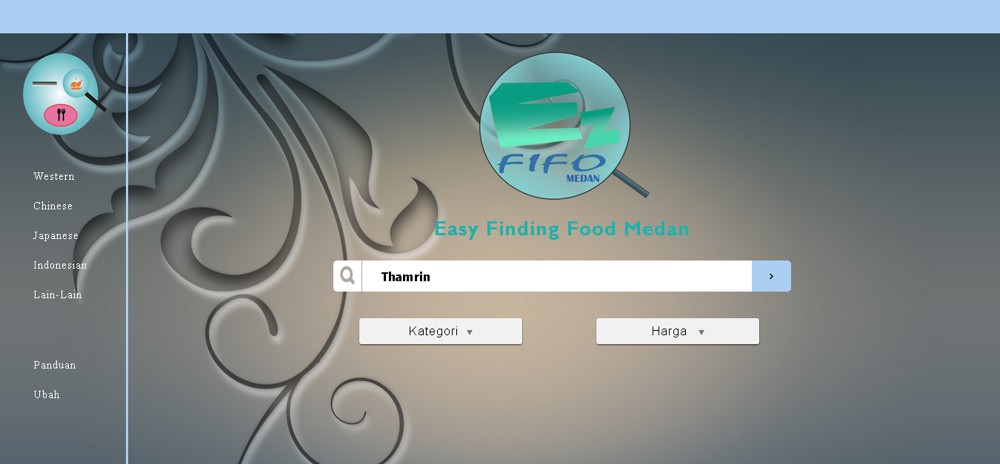Kita dapat melihat tempat makan apa saja yang pada jalan Thamrin.
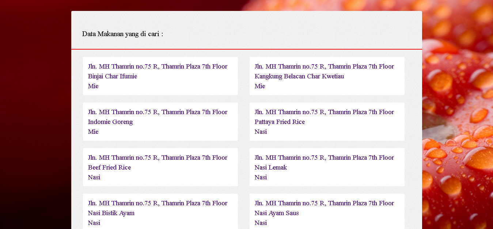Kita juga dapat meng-klik pada data yang muncul.
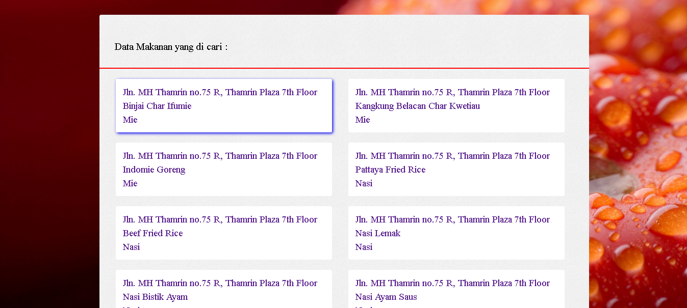Maka akan muncul tampilan yang lebih jelas tentang makanan tersebut.
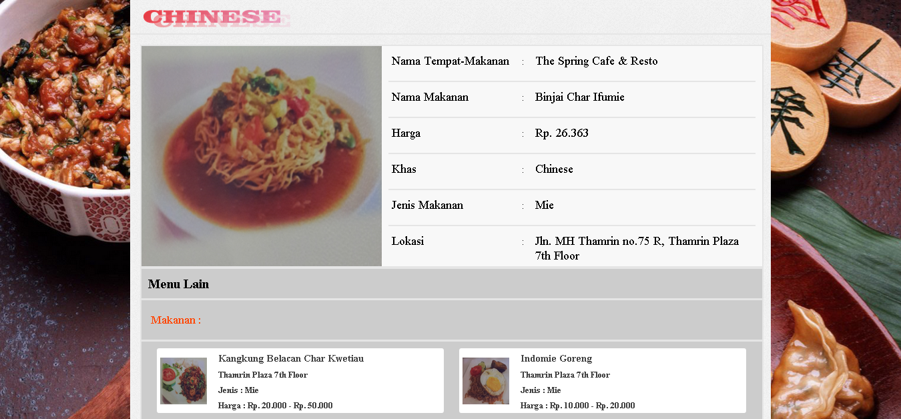Kita juga dapat meng-klik menu lain yang ada pada restoran tersebut. Misalnya : pada menu yang pertama.
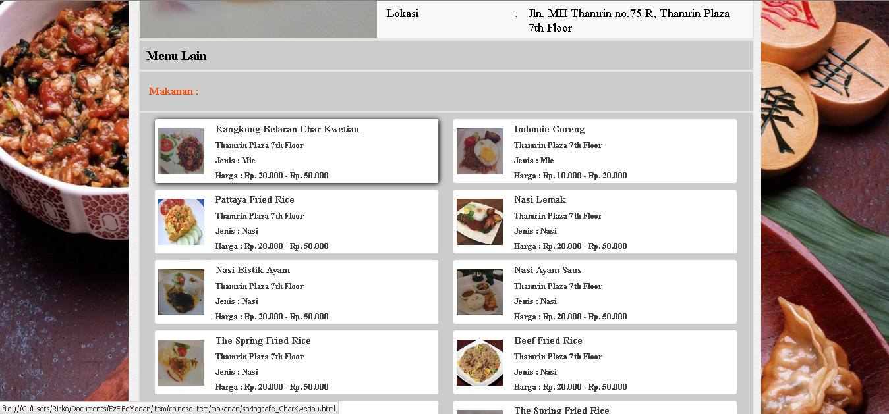Maka akan muncul tampilan tentang makanan tersebut.
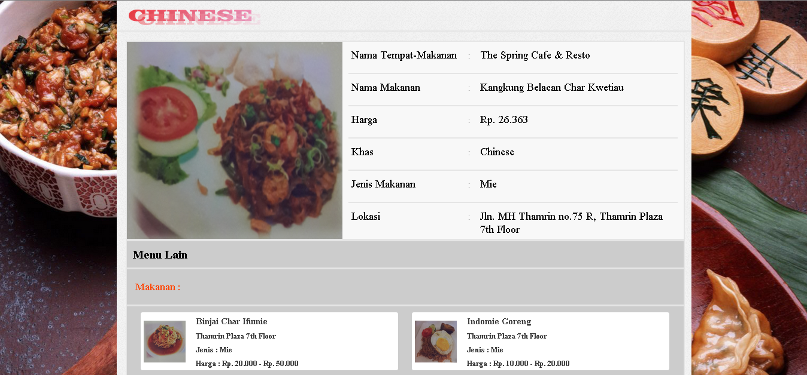kita juga bisa mencari tempat makanan tanpa menggunakan search. Hanya perlu memilih jenis khas apa yang kita mau. Misalnya: Western.
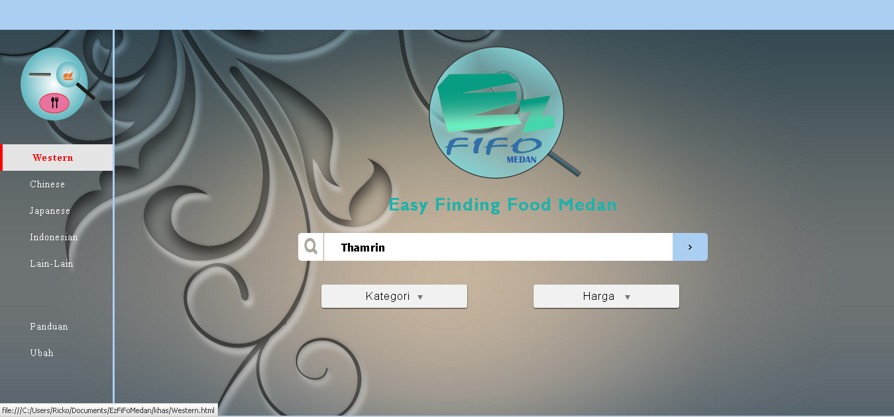Maka kita akan melihat data makanan yang ada hanya pada Western.
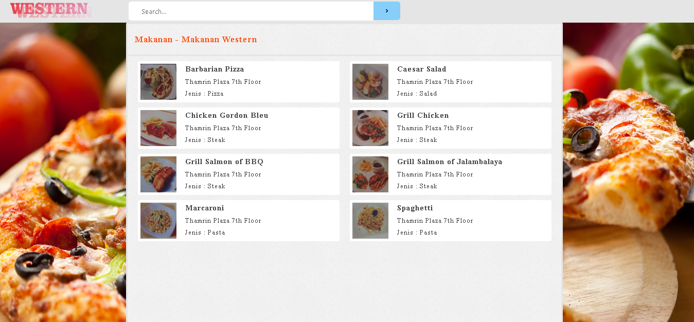Kita bisa menggunakan search untuk mencari data makanan yang ingin kita cari.
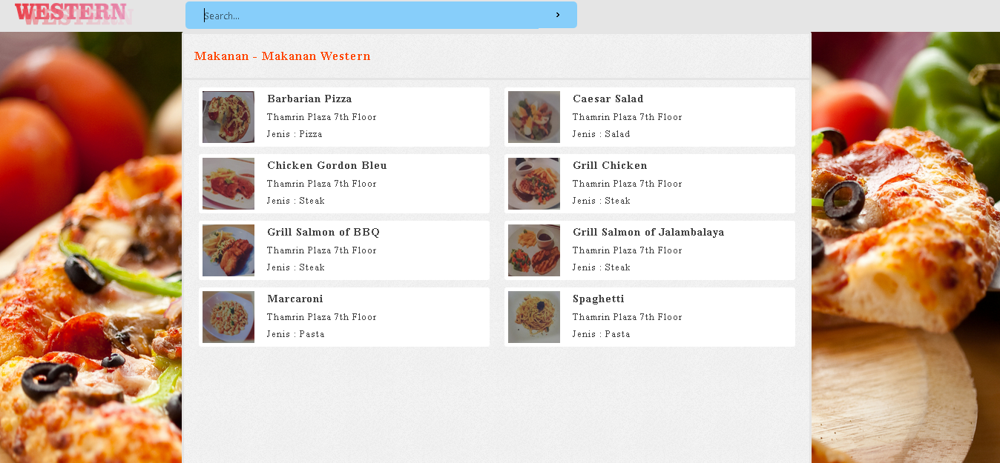Misalnya : Barbarian Pizza
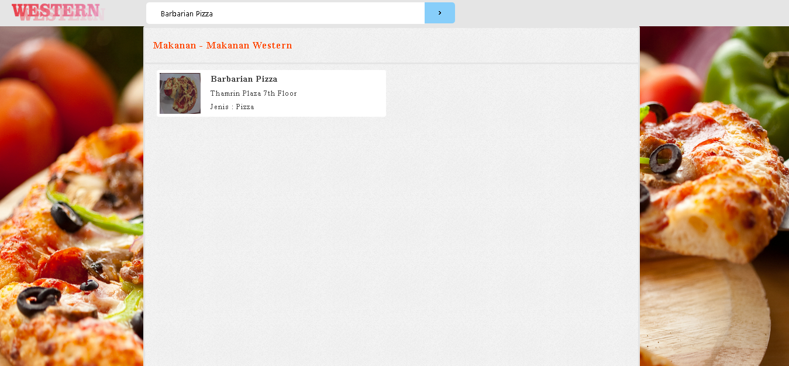Kita juga dapat meng-klik pada data makanan tersebut.

Dan akan muncul data tentang makanan tersebut.
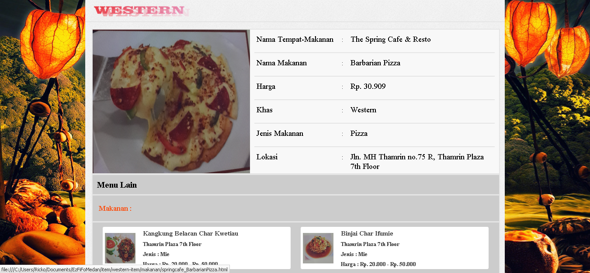Western, Japanese, Indonesian, Chinese, dan Lain-lain memiliki cara pencarian yang sama.
Pada tombol Ubah Kita bisa memberitahukan informasi tentang data makanan yang salah.
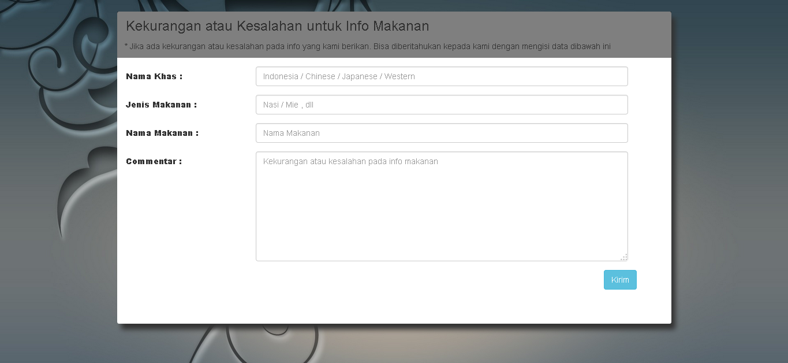